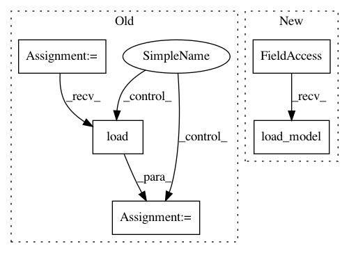

e81f54bb33f4a41c2ebdfdda41e5d70b52c32c87,pyannote/audio/embedding/base_autograd.py,SequenceEmbeddingAutograd,restart,#Any#Any#Any#,188
Before Change
// optimizer (configuration)
optimizer_pkl = _.OPTIMIZER_PKL.format(log_dir=log_dir, epoch=epoch)
with open(optimizer_pkl, mode="rb") as fp:
state = pickle.load(fp)
optimizer = keras.optimizers.deserialize(
state["optimizer_config"],
custom_objects=CUSTOM_OBJECTS)
After Change
weights_h5, custom_objects=CUSTOM_OBJECTS,
compile=True)
except TypeError as e:
embedding = keras.models.load_model(
weights_h5, custom_objects=CUSTOM_OBJECTS)
embedding.epoch = epoch
return embedding
In pattern: SUPERPATTERN
Frequency: 3
Non-data size: 5
Instances
Project Name: pyannote/pyannote-audio
Commit Name: e81f54bb33f4a41c2ebdfdda41e5d70b52c32c87
Time: 2017-05-05
Author: bredin@limsi.fr
File Name: pyannote/audio/embedding/base_autograd.py
Class Name: SequenceEmbeddingAutograd
Method Name: restart
Project Name: ilastik/ilastik
Commit Name: d4da64f59685cf99e7fdd13857e2577fa7bdce3f
Time: 2019-04-09
Author: jonas.massa@iwr.uni-heidelberg.de
File Name: ilastik/applets/networkClassification/nnClassGui.py
Class Name: NNClassGui
Method Name: add_NN_classifiers
Project Name: ilastik/ilastik
Commit Name: 38d021664f0d114532781a4b9b863c1d8f64c204
Time: 2019-04-09
Author: jonas.massa@iwr.uni-heidelberg.de
File Name: ilastik/applets/networkClassification/nnClassGui.py
Class Name: NNClassGui
Method Name: add_NN_classifiers